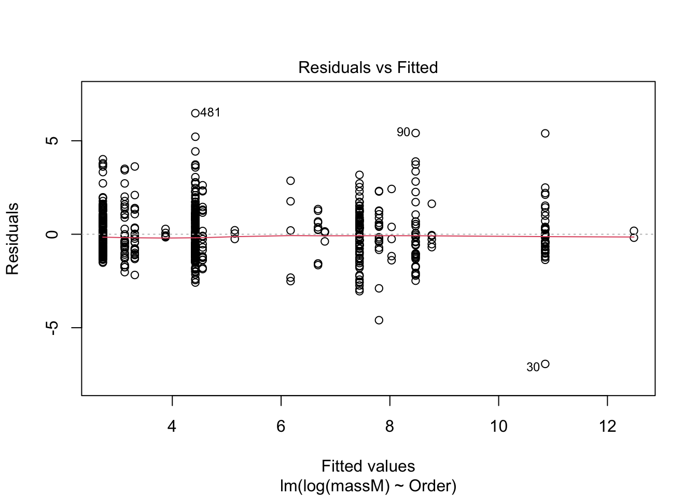
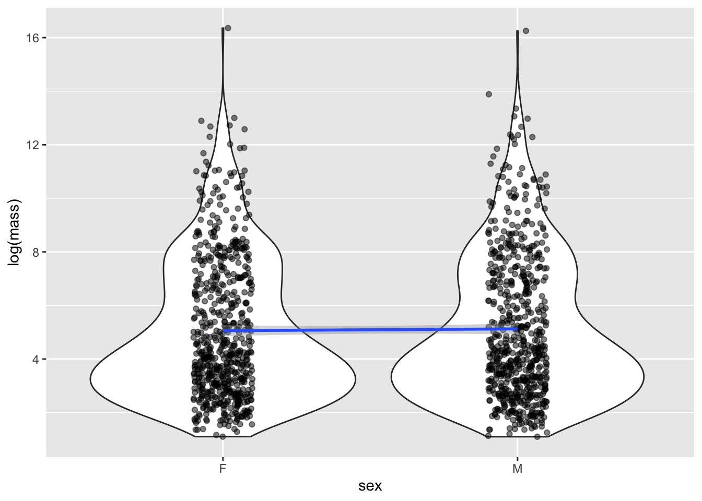

library(tidyverse)10 Linear models I
10.1 Lesson preamble:
10.1.1 Lesson objectives
- Understand the logic of the general linear model, including the assumptions that are placed on the data, parameters, and errors.
- Understand the meaning of regression coefficients and how they are estimated.
- Understand how to implement linear models in R.
- Learn how to respond when data violate assumptions, visualize fitted models, etc.
10.1.2 Lesson outline
- Theory
- Structure and assumptions, including interpretation of the effects
- Likelihood-based estimation and inference
- Transformations of the response, dummy variables, and interactions between covariates
- Practice
- Implement multivariate linear model using sexual size dimorphism dataset
- Develop intuition for model diagnostics
- Visualizing fitted models
SSDdata <- read_csv("data/SSDinMammals.csv")Rows: 691 Columns: 18
── Column specification ────────────────────────────────────────────────────────
Delimiter: ","
chr (6): Order, Family, Species, Scientific_Name, Comments, Source
dbl (12): massM, SDmassM, massF, SDmassF, lengthM, SDlengthM, lengthF, SDlen...
ℹ Use `spec()` to retrieve the full column specification for this data.
ℹ Specify the column types or set `show_col_types = FALSE` to quiet this message.10.2 Linear models: why we care
Linear models are at the heart of statistical practice in the physical, life, and social sciences! Linear regression actually refers to a family of modeling approaches that attempt to learn how the mean and/or variance of a response variable \(\boldsymbol{y} = (y_1,\dots,y_n)\) depend on (linear) combinations of variables \(\boldsymbol{x}_i = (x_{i1},\dots,x_{in})\) called predictors. In this lecture, we will discuss various forms of the linear model and assumptions placed on the data to make estimation and inference of the relationships between variables tractable. Our goal will be to become familiar with how these models work – namely, how their parameters are inferred using maximum likelihood — and practice fitting them in R.
10.3 The simple linear model
The simple linear models describes how a response \(Y\) depends on a contentious explanatory variable, \(x\), which is fixed. The model is
\[Y \sim \text{Normal}(\beta_0 + \beta_1 x, \sigma^2).\]
In turn, this specifies what the likelihood function have data \((y_1,x_1),\dots,(y_n,x_n)\). (As usual, we assume the \(y\)s are independent.)
Below is a visual representation of how the data generative process for \(Y\) is modeled. At each \(x\), \(Y\) is Normal with a mean that depends on the explanatory variable and fixed variance (i.e., changing \(x\) does not change the variance in the observed response).

10.3.1 Challenge
Form the likelihood \(L(\beta_0,\beta_1,\sigma^2|\boldsymbol{x}_i,\boldsymbol{y}_i)\). Recall that the probability distribution of the \(Normal(\mu,\sigma^2)\) distribution is
\[\frac{1}{\sqrt{2 \pi \sigma^2}} e^{-(y-\mu)^2/2\sigma^2}.\]
Hint: notice how, in the regression model, the mean value of the response is \(\beta_0 + \beta_1 x.\)
10.3.2 Challenge
What assumptions are we making about the data when we fit simple linear model? What must be true of the data? Discuss.
10.3.3 Challenge
Suppose we think \(Y\) is not normally distributed (and constant variance \(\sigma^2\)), but that it’s logarithm (or, say, square root) is. How might we adjust the model to account for this?
10.4 Multiple regression
It is straightforward to extend the simple regression model to include multiple covariates/predictors. Suppose, for each realization of \(Y\), we have associated measurements \(x_1,\dots,x_p\). We can model how \(Y\) changes with these predictors as follows:
\[Y \sim \text{Normal}(\beta_0 + \beta_1 x_1 + \beta_2 x_2 + \cdots + \beta_p, \sigma^2).\] The likelihood that arises from data \((y_i,x_{1i},\dots,x_{pi})\) where \(i=1,\dots,n\) is
\[L(\beta_0,\dots,\beta_p,\sigma^2) = \prod_{i=1}^n \frac{1}{\sqrt{2 \pi \sigma^2}} e^{-(y_i-\beta_0-\beta_1 x_{1i}-\cdots-\beta_p x_{pi})^2/2\sigma^2}.\]
Again, assumptions of this model include
- The data, i.e., observations of the response \(Y\), are independent and Normally distributed.
- The mean response is a linear function of the predictors.
- The error variance \(\sigma^2\) is constant and, thus, does not depend on the predictors.
- The parameters \(\beta_0,\dots,\beta_p\) (called regression coefficients or effect sizes) are non-random.
- The predictors are known with certainty.
Maximum likelihood estimation gives rise to point and interval estimates for \(\beta_1,\dots,\beta_p,\sigma^2\).1
10.4.1 Interpreting the regression coefficients
We must be careful how we interpret the parameters of any statistic model after we fit the model to data. This is definitely true of the regression coefficients \(\beta_1,\dots,\beta_p\). The estimates are not the same as the “true” values the parameters assume; they are our best guess of the “true” regression coefficients, given the (limited, imperfect, incomplete, noisy) data that we have. Moreover, \(\beta_j\) must be understood as the amount the average value of the response variable changes when the predictor \(x_j\) increases by one unit, assuming all else is constant.
That is, \(\beta_j\) is a measure of the sensitivity of \(E(Y)\) to \(x_j\) — how much does \(Y\) change, on average, if we increase \(x_j\) by one unit.
10.4.2 Transformations
If you suspect the raw data are not normally distributed, but transformed versions of the data are, you can replace \(Y\) with \(f(Y)\) where \(f(\cdot)\) is the transformation and proceed with the analysis. The only thing to keep in mind is how to interpret the regression coefficients.
If \(\beta_1 = 0.1\) when regression \(f(Y)\) on \(x_1,\dots,x_p\), then that means _per unit change in \(x_1\), all else constant, \(f(Y)\) increases, on average, by unit 0.1. This does NOT mean that \(Y\), on the raw scale, increases by that amount.
10.4.3 Categorical predictors
We can regress \(Y\) on discrete, as well as continuous, predictor variables. To see how this is done, and how to interpret the resulting regression coefficients, suppose a predictor has \(K\) levels. To estimate the effect of one of these levels on the response variable (say, of sampling individuals in a particular country), one of the levels of the discrete variable is treated as a “reference” and effects are estimated for all other levels. That is, we define the model in terms of a baseline and to interpret the regression coefficients relative to this baseline. This involves coding “dummy variables” for all but one the \(K\) values the predictor can take assume and estimating regression coefficients for each of these variables.
The regression coefficient for a “dummy variable” (associated to one of the values a categorical predictor) measures the expected change in the response, all else constant, if we were to change from the baseline to the level of interest.
10.4.4 Interactions, higher order terms
Finally, linear models can accommodate non-linear interactions between explanatory variables. If \(x_2 = x_1^2\), one can estimate an effect for \(x_2\). This effect has to be interpreted carefully – it is the expected change in the response, all else constant, if \(x_2 = x_1^2\) increases by one unit – but does not pose a difficulty to forming the likelihood nor maximizing it.
Other interactions can also be modeled. For example, suppose we were interested in the combined effects of changing salinity and temperature on the number of species in an ecosystem because we suspect that changing salinity has little effect on the effect on the number of species if temperature in high (e.g., there are no species left). Then, letting \(x_1\) be salinity and \(x_2\) temperature, their interaction would be included as a covariate \(x_3 = x_1 x_2\) and the associated effect estimated from the data.
When there are interactions, coefficients of must be interpreted very carefully. We can say that \(\beta_1\) is the expected change in the response, all else constant, if we increase \(x_1\) by one unit and set all covariates with which it interacts equal to zero. For example, if \(\beta_3\) is the effect of a salinity-temperature interaction, the coefficient for temperature is the expected change in the response, all else constant, if temperature increases by one unit and salinity is equal to zero. Likewise, \(\beta_3\) is the expected change in the response upon increasing \(x_1\) and \(x_2\) by one unit each in addition to the effects of each variable in isolation.
10.5 Using lm to fit a multivariate regression model
One can use the likelihood above to derive estimates of \(\beta_0,\dots,\beta_p,\sigma^2\) and confidence intervals for those parameters. (In fact, one can use calculus to maximize the likelihood and derive expressions for the estimates which maximize the probability of the observed data.)
Maximization of the likelihood, assuming the data are independent draws of a normal distribution with the mean and varience specified above, is exactly what happens when one fits a regression model in R using the function lm().
For example, using the sexual size dimorphism data set, one to estimate the effects of Order (a variable) on the logarithm mean male mass as follows.
model <- lm(log(massM) ~ Order, data = SSDdata)
summary(model)
Call:
lm(formula = log(massM) ~ Order, data = SSDdata)
Residuals:
Min 1Q Median 3Q Max
-6.9361 -0.8298 -0.1617 0.7102 6.4749
Coefficients:
Estimate Std. Error t value Pr(>|t|)
(Intercept) 3.3101 0.2800 11.823 < 2e-16 ***
OrderArtiodactyla 7.5459 0.3584 21.054 < 2e-16 ***
OrderCarnivora 5.1631 0.3530 14.627 < 2e-16 ***
OrderChiroptera -0.5865 0.2982 -1.967 0.049623 *
OrderCingulata 4.7213 0.6625 7.127 2.65e-12 ***
OrderDasyuromorphia 2.8644 0.6625 4.324 1.77e-05 ***
OrderDidelphimorphia 1.2473 0.4052 3.078 0.002169 **
OrderDiprotodontia 4.4899 0.4105 10.938 < 2e-16 ***
OrderEulipotyphla -0.1853 0.3584 -0.517 0.605292
OrderLagomorpha 3.3687 0.5086 6.624 7.15e-11 ***
OrderMacroscelidea 0.5654 0.6625 0.853 0.393752
OrderPeramelemorphia 3.4938 0.7274 4.803 1.92e-06 ***
OrderPerissodactyla 9.1769 0.9898 9.271 < 2e-16 ***
OrderPilosa 5.4604 0.6155 8.872 < 2e-16 ***
OrderPrimates 4.1313 0.3152 13.108 < 2e-16 ***
OrderRodentia 1.1136 0.2943 3.784 0.000168 ***
OrderScandentia 1.8380 0.8242 2.230 0.026065 *
---
Signif. codes: 0 '***' 0.001 '**' 0.01 '*' 0.05 '.' 0.1 ' ' 1
Residual standard error: 1.343 on 674 degrees of freedom
Multiple R-squared: 0.7588, Adjusted R-squared: 0.7531
F-statistic: 132.5 on 16 and 674 DF, p-value: < 2.2e-16After a call to lm(), R returns a lot of information. Here is what is in the table above:
- Descriptive statistics for the “residuals” \(\varepsilon_i = y_i - \widehat{\beta_0} - \widehat{\beta_1} x_i\), which tell us about how much variability there is in the data relative to the linear model specified and fitted.
- The regression coefficients minimizing the likelihood of the data and \(95\%\) confidence intervals for each. The CIs are expressed as standard errors, since the estimators have an approximate Normal distribution. A joint confidence region for the coefficients can also be found using the LLR statistic which have been using to construct confidence intervals.
- A suite of test statistics! The \(t\) statistics and their \(p\) values are associated to the test \(H_0: \beta_i = 0\) vs \(H_1: \beta_i \neq 0\). Significance codes specify the level \(\alpha\) at which we have evidence to reject the null hypothesis for each coefficient.
- Measures of goodness-of-fit: the multiple \(R^2\) and the adjusted \(R^2\). These explain the proportion of variance that are explained by the model. The latter measures the proportion of variance explained by the linear model upon adjusting for sample size and \(\#\) of predictors.
10.5.0.1 Challenge
How would we interpret the coefficient associated to the Order Dasyuromorphia?
10.5.0.2 Challenge
Why did we log-transform the mean mass of males in the previous call to lm()? Hint: think about the assumptions of the linear model.
10.6 Checking assumptions of the model are satified
One can do a quick check to see if the assumptions of the regression model — e.g., that the data are normal — by calling the function plot() on the model fitted using lm.
plot(model) # returns diagnostics (are the data normal, are there points with high leverage...)
More on how to read diagnostic plots can be found here.
10.7 An example!
10.7.1 In mammals, is there an effect of sex on body size?
Recall how you cleaned the sexual size dimorphism dataset in the second homework. We will use the cleaned dataset to do a very crude test of the hypothesis that males and females differ in size. In particular, we will determine the quantitative effect of sex is on the size of a typical individual, regardless of their species, sampling effort, etc. Much more complicated models can be constructed, but it turns out these models give rise to qualitatively-similar conclusions.
mammal_length <- SSDdata %>%
select(c("Order", "Scientific_Name", "lengthM", "lengthF")) %>%
pivot_longer(c(lengthM, lengthF), names_to = "sex", values_to = "length",
names_pattern = "length(.)")
mammal_mass <- SSDdata %>%
select(c("Order", "Scientific_Name", "massM", "massF")) %>%
pivot_longer(c(massM, massF), names_to = "sex", values_to = "mass",
names_pattern = "mass(.)")
mass_nodup <- mammal_mass %>%
group_by(Scientific_Name, sex) %>%
distinct(Scientific_Name, sex, .keep_all = TRUE)
length_nodup <- mammal_length %>%
group_by(Scientific_Name, sex) %>%
distinct(Scientific_Name, sex, .keep_all = TRUE)
mammal_long <- full_join(mass_nodup, length_nodup,
by = join_by("Scientific_Name", "sex", "Order"))
glimpse(mammal_long)Rows: 1,282
Columns: 5
Groups: Scientific_Name, sex [1,282]
$ Order <chr> "Afrosoricida", "Afrosoricida", "Afrosoricida", "Afros…
$ Scientific_Name <chr> "Amblysomus hottentotus", "Amblysomus hottentotus", "E…
$ sex <chr> "M", "F", "M", "F", "M", "F", "M", "F", "M", "F", "M",…
$ mass <dbl> 80.6, 66.0, 28.0, 23.1, 102.4, 99.9, 7.3, 7.0, 111.0, …
$ length <dbl> NA, NA, NA, NA, NA, NA, NA, NA, NA, NA, NA, NA, NA, NA…model <- lm(log(mass) ~ sex, data = mammal_long)
summary(model)
Call:
lm(formula = log(mass) ~ sex, data = mammal_long)
Residuals:
Min 1Q Median 3Q Max
-4.0267 -2.0625 -0.7779 1.8266 11.2988
Coefficients:
Estimate Std. Error t value Pr(>|t|)
(Intercept) 5.0586 0.1048 48.25 <2e-16 ***
sexM 0.0667 0.1483 0.45 0.653
---
Signif. codes: 0 '***' 0.001 '**' 0.01 '*' 0.05 '.' 0.1 ' ' 1
Residual standard error: 2.655 on 1280 degrees of freedom
Multiple R-squared: 0.000158, Adjusted R-squared: -0.0006231
F-statistic: 0.2023 on 1 and 1280 DF, p-value: 0.6529Remarkably, no effect! Males are not larger than females. The \(p\) value is not only \(>\alpha = 0.05\), the size of the estimated effect is quite small. This is pretty suprising, given the large number of papers that claim, despite the lack of evidence, that there are stark differences in size between male and female individuals.
10.7.2 Adding interactions…
To include multiple variables in a regression, without their interaction, one writes y ~ x + z. To include their interaction, the syntax is y ~ x*z. (This is equivalent to y ~ x + z + x:z where the color indicates to fit an interaction-only model. In general, it is best to avoid fitting interaction-only models. As this post explains, interactions can be due to dependence of the response on the covariates in the interaction, or non-linear functions of those covariates. Plus, interpreting the estimated coefficients is really difficult.)
How would you fit a model in which there is an effect of sex and, separately, effects of belonging to a given Order on mean body size? How would you fit a model where, in addition to these effects, an interaction between sex and Order?
OrderSpecificModel <- lm(log(mass) ~ sex+Order, data = mammal_long)
summary(OrderSpecificModel)
Call:
lm(formula = log(mass) ~ sex + Order, data = mammal_long)
Residuals:
Min 1Q Median 3Q Max
-7.3025 -0.8503 -0.1681 0.7009 6.6448
Coefficients:
Estimate Std. Error t value Pr(>|t|)
(Intercept) 3.26470 0.20065 16.271 < 2e-16 ***
sexM 0.06670 0.07469 0.893 0.372003
OrderArtiodactyla 7.48041 0.25681 29.128 < 2e-16 ***
OrderCarnivora 4.98832 0.25238 19.765 < 2e-16 ***
OrderChiroptera -0.51539 0.21144 -2.437 0.014926 *
OrderCingulata 4.75527 0.46652 10.193 < 2e-16 ***
OrderDasyuromorphia 2.67286 0.46652 5.729 1.26e-08 ***
OrderDidelphimorphia 1.04768 0.29311 3.574 0.000364 ***
OrderDiprotodontia 4.46041 0.28907 15.430 < 2e-16 ***
OrderEulipotyphla -0.13484 0.25681 -0.525 0.599633
OrderLagomorpha 3.16969 0.38807 8.168 7.54e-16 ***
OrderMacroscelidea 0.58336 0.46652 1.250 0.211367
OrderPeramelemorphia 3.38116 0.51219 6.601 5.98e-11 ***
OrderPerissodactyla 9.19047 0.69700 13.186 < 2e-16 ***
OrderPilosa 5.56738 0.46652 11.934 < 2e-16 ***
OrderPrimates 4.06503 0.22279 18.246 < 2e-16 ***
OrderRodentia 1.12542 0.20796 5.412 7.46e-08 ***
OrderScandentia 1.83724 0.58037 3.166 0.001584 **
---
Signif. codes: 0 '***' 0.001 '**' 0.01 '*' 0.05 '.' 0.1 ' ' 1
Residual standard error: 1.337 on 1264 degrees of freedom
Multiple R-squared: 0.7495, Adjusted R-squared: 0.7461
F-statistic: 222.5 on 17 and 1264 DF, p-value: < 2.2e-16OrderSexInteractionModel <- lm(log(mass) ~ Order*sex, data = mammal_long)
summary(OrderSexInteractionModel)
Call:
lm(formula = log(mass) ~ Order * sex, data = mammal_long)
Residuals:
Min 1Q Median 3Q Max
-7.2349 -0.8424 -0.1661 0.6973 6.6406
Coefficients:
Estimate Std. Error t value Pr(>|t|)
(Intercept) 3.286023 0.280406 11.719 < 2e-16 ***
OrderArtiodactyla 7.391554 0.365279 20.235 < 2e-16 ***
OrderCarnivora 4.864594 0.358973 13.551 < 2e-16 ***
OrderChiroptera -0.480737 0.300745 -1.598 0.110187
OrderCingulata 4.789225 0.663561 7.217 9.17e-13 ***
OrderDasyuromorphia 2.481360 0.663561 3.739 0.000193 ***
OrderDidelphimorphia 0.985744 0.416903 2.364 0.018210 *
OrderDiprotodontia 4.430888 0.411156 10.777 < 2e-16 ***
OrderEulipotyphla -0.168853 0.365279 -0.462 0.643977
OrderLagomorpha 3.206508 0.551980 5.809 7.96e-09 ***
OrderMacroscelidea 0.601359 0.663561 0.906 0.364973
OrderPeramelemorphia 3.268528 0.728516 4.487 7.91e-06 ***
OrderPerissodactyla 9.204062 0.991385 9.284 < 2e-16 ***
OrderPilosa 5.618670 0.663561 8.467 < 2e-16 ***
OrderPrimates 4.009450 0.316885 12.653 < 2e-16 ***
OrderRodentia 1.108223 0.295791 3.747 0.000187 ***
OrderScandentia 1.836437 0.825493 2.225 0.026283 *
sexM 0.024053 0.396554 0.061 0.951643
OrderArtiodactyla:sexM 0.177712 0.516582 0.344 0.730893
OrderCarnivora:sexM 0.247443 0.507665 0.487 0.626050
OrderChiroptera:sexM -0.069299 0.425317 -0.163 0.870596
OrderCingulata:sexM -0.067905 0.938418 -0.072 0.942326
OrderDasyuromorphia:sexM 0.382991 0.938418 0.408 0.683252
OrderDidelphimorphia:sexM 0.123879 0.589590 0.210 0.833615
OrderDiprotodontia:sexM 0.059034 0.581462 0.102 0.919148
OrderEulipotyphla:sexM 0.068022 0.516582 0.132 0.895261
OrderLagomorpha:sexM -0.073637 0.780617 -0.094 0.924861
OrderMacroscelidea:sexM -0.035996 0.938418 -0.038 0.969409
OrderPeramelemorphia:sexM 0.225269 1.030277 0.219 0.826959
OrderPerissodactyla:sexM -0.027191 1.402030 -0.019 0.984530
OrderPilosa:sexM -0.102580 0.938418 -0.109 0.912973
OrderPrimates:sexM 0.111163 0.448142 0.248 0.804134
OrderRodentia:sexM 0.034388 0.418312 0.082 0.934496
OrderScandentia:sexM 0.001603 1.167423 0.001 0.998904
---
Signif. codes: 0 '***' 0.001 '**' 0.01 '*' 0.05 '.' 0.1 ' ' 1
Residual standard error: 1.345 on 1248 degrees of freedom
Multiple R-squared: 0.7498, Adjusted R-squared: 0.7432
F-statistic: 113.3 on 33 and 1248 DF, p-value: < 2.2e-16Notice that in the OrderSexInteractionModel model, there are significant effects of the Order on body size but the effect of sex, even when order-specific, on size is not significant. That is, the associated regression coefficients have confidence intervals overlapping zero, so that we fail to reject the null hypothesis \(H_0: \beta_j = 0\).
10.7.3 Challenge
Use a for loop to regress log body size on sex for each Order? Print the coefficients from inside the loop.
10.7.4 Visualizing fitted models
For the first model we fit, it is straightforward to visualize the (lack of an) effect of sex on size:
model <- lm(log(mass) ~ sex, data = mammal_long)
mammal_long |> ggplot(aes(x = sex, y = log(mass))) +
geom_violin() +
geom_jitter(alpha = 0.5, width = 0.1) +
geom_smooth(aes(group = 1), method = "lm")`geom_smooth()` using formula = 'y ~ x'
For the model fitted for each Order, we can visualize the effects as follows:
mammal_long |>
ggplot(aes(x = sex, group = Order, y = log(mass))) +
geom_jitter(alpha = 0.5, width = 0.1) +
geom_smooth(method = "lm") +
facet_wrap(~Order)`geom_smooth()` using formula = 'y ~ x'Notice differences in sample size (i.e., number of sampled species per order).
10.7.5 Challenge
Regress log body size on log length, visualize the effect, and interpret the coefficient for length. Then do the same but including sex and its interaction with length as an effect.
Hint: when interpreting the coefficient for length, recall that it has been log-transformed and, in the interaction, everything is measured relative to a baseline (in this example, males relative or the other way around). A per unit increase in the covariate does not imply a per unit increase in length.
CAUTION: do not fit your models using ggplot. Use lm(). Visualizing the model should be, well, a visualization exercise. It is quite dangerous to draw conclusions when you are not 100 percent sure what model (with or without interaction, by factor, etc.) was fit and then plotted. To avoid these issues, many folks visualize models fitted in lm() using base R.
It is worth noting that what is often used in theory and practice is a matrix formulation of the model we have written down: \[\boldsymbol{y} = \begin{bmatrix} y_{1} \\ y_{2} \\ \vdots \\ y_{n} \end{bmatrix} = \begin{bmatrix} 1 & x_{11} & x_{21} & \cdots & x_{p1} \\ 1 & x_{12} & x_{22} & \cdots & x_{p2} \\ \vdots & \vdots & \vdots & & \vdots \\ 1 & x_{1n} & x_{2n} & \cdots & x_{pn} \end{bmatrix} \begin{bmatrix} \beta_{1} \\ \beta_{2} \\ \vdots \\ \beta_{p} \end{bmatrix} + \begin{bmatrix} \varepsilon_{1} \\ \varepsilon_{2} \\ \vdots \\ \varepsilon_{n} \end{bmatrix} = \boldsymbol{X} \boldsymbol{\beta} + \boldsymbol{\varepsilon}.\] Here, \(\boldsymbol{y} = (y_1,\dots,y_n)'\) is a vector of measurements for the response, \(\boldsymbol{x_i} = (x_{i1},\dots,x_{in})'\) is a vector of measurements for the \(k\)th predictor, and \(\boldsymbol{\varepsilon} = (\varepsilon_1,\dots,\varepsilon_n)'\) is a vector of measurement errors. The \('\) symbol denotes transposition, the operation where the rows and columns of a vector or matrix are interchanged. In R, the function
t()can be used to transpose a vector or matrix.↩︎